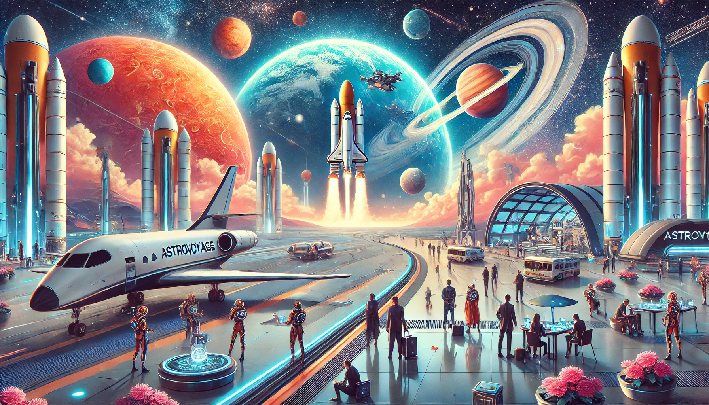

Titre de la modal
Message de la modal
AstroVoyage™ est né d’une ambition audacieuse : rapprocher l’humanité des merveilles du système solaire. Tout a commencé dans les murs d’un laboratoire universitaire, au sein d’un master pour devenir Ingénieur Pédagogique Multimodale (IPM). Ce projet était initialement pédagogique, destinée à enseigner les techniques avancées de programmation front-end à travers un projet de création de site avec pour objectifs : l'innovation et la révolution. Notre idée de voyages interplanétaires débutait.
Sous la direction visionnaire d’étudiants passionnés et de mentors inspirés, l’idée a rapidement dépassé le cadre académique. Ce qui n’était qu’une vitrine technologique s’est transformé en une entreprise ambitieuse, résolue à rendre les voyages interplanétaires accessibles à tous.
Chez AstroVoyage™, nous croyons que l’exploration spatiale ne doit pas être réservée aux astronautes. Grâce à des technologies de pointe et à des partenariats avec les plus grandes agences spatiales, nous proposons des expériences uniques qui allient sécurité, confort et aventure.

Des destinations variées : Explorez le sous-sol du mont Olympe sur Mars, survolez les nuages de Vénus ou plongez dans les mers glacées d’Europe.
Une innovation constante : Nos racines dans le domaine de la programmation garantissent une expérience immersive et intuitive, adaptée à chaque voyageur.
Un engagement durable : Nous travaillons à minimiser l’impact environnemental de chaque voyage, même dans l’espace.
AstroVoyage™ est animé par une équipe multidisciplinaire regroupant des experts en aérospatiale, en conception web et en expérience utilisateur. Notre approche centrée sur l’humain garantit des séjours adaptés à vos besoins, qu’il s’agisse d’une escapade romantique sur la Lune ou d’une expédition scientifique sur Titan.
Rejoignez-nous pour écrire le prochain chapitre de l’exploration humaine. Avec AstroVoyage™, les étoiles ne sont plus hors de portée !